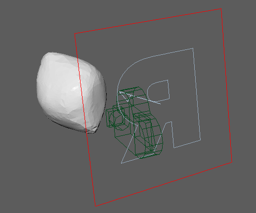
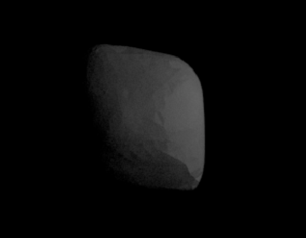
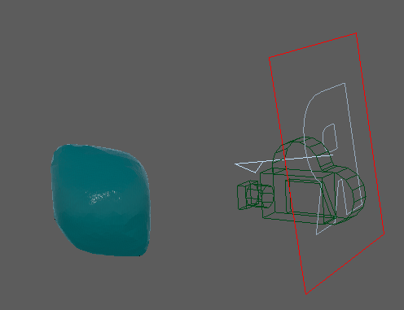
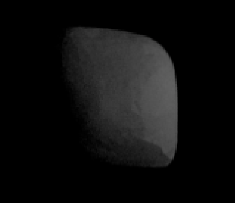

Ice-olation - CS184 Final Project
Following the feedback that we received from the TA, we decided to make our project goal rendering realisitc, simulating the formation of airbubbles inside the ice structure. To this end, we decided to follow two papers in particlar to aid us in completing this task: Castillo's paper on rendering blue ice and Ghafari and Park's paper on Crack Propagations and bubble generations . The first paper was used to figure out the steps in rendering realistic looking ice, while the second paper will be used to guide us through generating bubble and cracks in the ice.
Following closely with Castillo's paper led us to first learn how to use Pixar's renderman and Maya in order to process RIB files. We were able reach a level of comfort using tools like Maya and Blender and able to sculpt an ice model, however there were barely any modern tutorials on how to use renderman's coding language, RSL, in hand with Maya. The best we found was a guide under the Renderman documentation on how to simulate translucency and subsurface scattering, however we encountered many problems when trying to render the examples in this guide. One problem was compling the .sl files so that it could be rendered on an arbitrary rib file. We tried using renderman pro server and 3delight, but were unable to figure out what the problem was. We followed guides like from TDChannel, but we were experiencing problems with either commands not found or software crashes when rendering. We also had problems exporting our ice model from Maya as a RIB file and searched for alternatives but were unable to find any dated solutions. We decided to follow along with our class projects and use a collada file instead of using Renderman and RIB. Currently, we are looking at creating GLSL shaders instead.
Because group members were busy with other assignments and classes, living in different time zones, and differnt times of availablility, we were unable to meet up and work for on the project very much since the proposal. We tried following our timeline and familiarized ourselves with the tools we expected to use and began developing the tools that we'd need when rendering ice. With a mix of Maya and Blender, we were able to sculpt a model and add lighting and cameras to the environement as seen in fig 1.1, and with Renderman, we successfuly rendered the model as in fig 1.2, however we were unable to render the model with any shaders, let alone compiling our own shaders (fig 1.3, fig 1.4).
|

|

|
|

|

|
As decribed earlier, we tried a multitude of things to try and make this work as described in the Castillo paper, but nothing really went our way and we kept hitting walls. At this point, we decided to just follow along with the Ghafari paper while incorporating parts of our project 3-2.2 and project 4 to make the rendering. We are in the progress of implementing an algorithm that randomly generates air bubbles in our model and our microfacet glass BSDF.
So far, we didn't reach a satisfying point in our schedule that we set aside for ourselves, partially because of time conflicts and walls that we've hit while trying to follow the Castillo paper. Now that most of our classes are wrapping up before dead week, we project that we'd be able to work and meet up more often and make headway on our project. For now, we'll continue with our original schedule but combine our week 2 and week 3 plan so that we eventually meet our planned deadline.